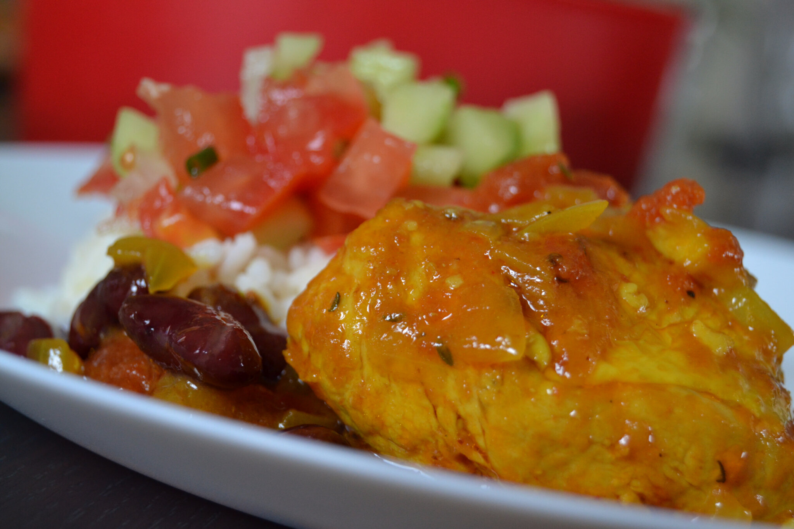
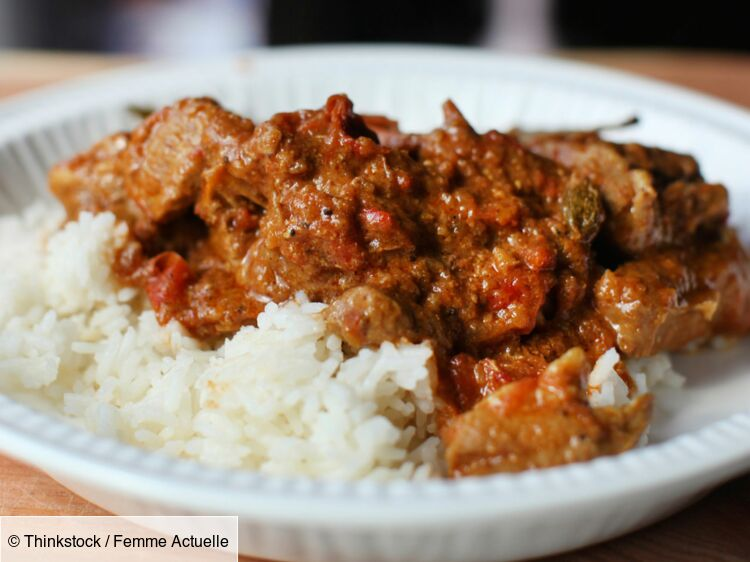

Cuisine créole
nos menus

Rougail saucisse
Découvrez la recette du Rougail saucisses réunionnais, spécialité créole relevée et généreuse qui sent bon la Réunion.

Carry Poulet
Manger avec du riz, des grains et un bon petit rougail mangue pimenté bien sûr...

Cabry massalé
Plat d'origine mauricienne, le cabri se consomme le plus traditionnellement lors de cérémonies tamoules.